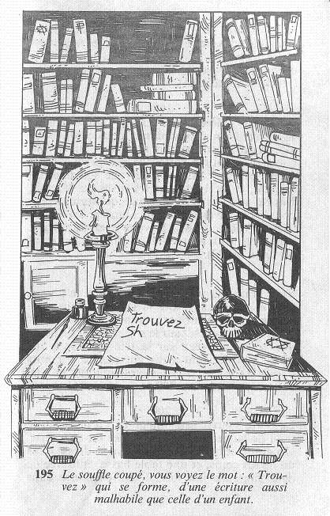

La porte s'ouvre sans difficulté. Les murs de la pièce dans laquelle vous pénétrez sont couverts d'étagères, sur lesquelles s'alignent des livres aux reliures de cuir. Elle n'est éclairée que par une simple bougie, posée sur un bureau d'apparence ancienne. Vous vous en approchez : il est fait d'un bois précieux, et les poignées de cuivre des tiroirs sont remarquablement travaillées. Alors que votre regard se pose sur une feuille de papier qui est placée sur un sous-main, vous vous rendez subitement compte que quelque chose d'étrange est en train de se produire. Dans le coin supérieur gauche de la feuille, s'inscrit lentement la lettre « T »... Le souffle coupé, vous voyez le mot « Trouvez » qui se forme d'une écriture aussi malhabile que celle d'un enfant.

Vous ajoutez 1 point à votre total de PEUR. Un message, qui selon toute apparence vous est destiné, apparaît alors lentement : « Trouvez Shekou ». Qui est Shekou ? Ou qu'est-ce que c'est ? Vous vous saisissez de la feuille de papier, et vous faites le tour du bureau pour l'approcher de la bougie. Mais aussi vite qu'il est apparu, le message disparaît. Maintenant vous pouvez jeter un coup d'œil aux livres , ou quitter la pièce .